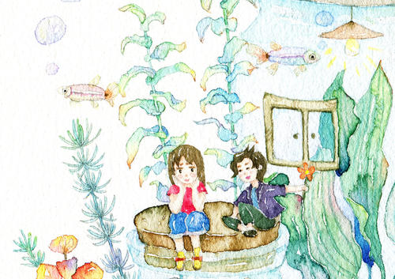

第六版
第六版

曾经我以为创造出我想要的世界很简单。
我在那座楼上望着秋叶慢慢凋落，望着鸿雁的来来回回和麻雀的惊起，我的一个小愿望，我想要飞。可后来我知道要有动力，能源，材料等各种硬件软件的一个个复杂问题，我有点失落，原来创造我的世界一点也不简单。
后来阴差阳错投身文史，见识了幻想的科技帝国，宇宙宏图，和一个又一个目前现实中不可能实现的世界。我想，我或许可以在这里创造出我的世界，我的梦想，我可以在这里无边无际的飞翔，问问秋叶凋落后，是否还眷恋着树枝，问问鸿雁和麻雀它们飞翔路中遇到了什么有趣的事，哪家的孩子气球跑了，哪家的孩子风筝和它们一样飘向远方。
再到后来我亲眼看到了我的那一个个小愿望，早已经在荧幕中实现，带着自己会飞的屋子去旅游，和自己脑袋中的小人说话，捏的小泥人，小雪人成了我冒险的朋友。我又想了想，我觉得我的世界要更加直观，我要带给更多人看，让所有人都来的我的世界，这或许不是我的世界，而是一个真正的世界，看的着，摸得到，那这是一个真实的世界。我想要做一个自己的动画，讲一个自己的愿望。
我以为我要我的世界很简单，可是当我拿着笔发着一夜又一夜的愣之后，我错了，我在想，什么是我？什么又是世界？
是我之外的都是世界，我则是另一个世界，那么创造世界和创造我，我好像明白是一样的困难。
因为世界终究要是真实的，我的世界里我可以飞，但是我飞了起来看不到那个苍茫大地，看不到那个霓虹闪烁，看不到那些飞走的气球，我想哭，我揪自己的头发，为什么我看不到了。
那朵我仰起头对我笑的云朵，每年来和我打招呼的麻雀，和分享旅途故事的鸿雁，那个时候我看到万物变幻，看到了历史变迁，看到了玄奘西行，看到了李白出游，看到了那个飞向宇宙深处的探测器被发现，看到那束射向地球的激光，看到了无数年后人类在地球上什么也没留下，看到了支教老师一点点的老去，看到了山区学生求知的眼睛，看到了每一个在路上无奈的行人。
现在，我什么也看不到，不知从什么时候开始，忧郁的小王子再也没来到过我身边。我以为我可以用科技创造我的世界，我以为我可以用文学搭造我的世界，我也见过了科技与文学共同搭建的世界，可是我的世界甚至我也慢慢触摸不到了......
我想如果可以我愿意再次回到以前，重走当时路，重新寻找我的朋友们，重新建造一次我的路。
我该回了，去寻找我的世界。